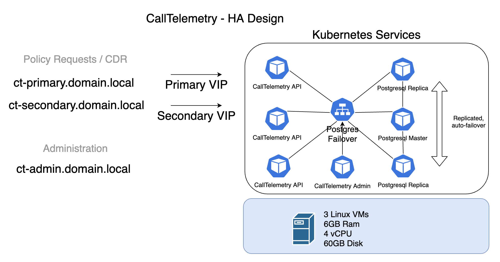

Enterprise HA Cluster Guide#
Professional Installation support is available for clustered installs.#
This area is new and under development, this is intended to be a guide, but not self installed. Please contact me if you think this deployment fits your need. Once you have 3 machines ready, the entire cluster install can be done in under 30 minutes.
Architecture#

Deploy 3 CentOS Servers#
I am using CentOS 8.2. Configure your own DNS, Static IPs, etc.
On ALL Nodes - Bootstrap script#
CentOS only Run this script to install kubectl, helm, and k9s, git and disable firewall.
curl https://raw.githubusercontent.com/calltelemetry/calltelemetry/master/ha-scripts/centos_prep.sh | sh
Install First K3s Master Node#
cd calltelemetry/ha-scripts
# Edit your master.sh file with your own variables. Just a couple IPs and passwords. See comments inside the file.
./master.sh
Install K3s Masters 2 and 3#
# On secondary nodes:
cd calltelemetry/ha-scripts
# Edit the secondary.sh file - change the IP to be your master
./secondary.sh
Check the health of the nodes before continuing - all should say running.
calltelemetry@hp-k3s-1:~$ kubectl get nodes
NAME STATUS ROLES AGE VERSION
ct-node-1 Ready control-plane,etcd,master 4m36s v1.20.0+k3s2
ct-node-2 Ready control-plane,etcd,master 40s v1.20.0+k3s2
ct-node-3 Ready control-plane,etcd,master 19s v1.20.0+k3s2
calltelemetry@hp-k3s-1:~$
Run Post-Install Script#
Scales up a couple resources to fill out your 3 node cluster. (Run this on Node 1)
kubectl port-forward -n pgo svc/postgres-operator 8443:8443 &
curl https://raw.githubusercontent.com/calltelemetry/calltelemetry/master/ha-scripts/post_install.sh | sh
Wait a moment and check your SQL cluster
pgo test ctsql
cluster : ctsql
Services
primary (10.43.222.74:5432): UP
replica (10.43.246.172:5432): UP
Instances
primary (ctsql-6895cd4bb-2f524): UP
replica (ctsql-iulc-75ccc767c7-wwd2k): UP
replica (ctsql-yzgz-8689bb9998-c2mlf): UP
Check the deployment - you should see 3 CallTelemetry-web servers running.
kubectl get pods
NAME READY STATUS RESTARTS AGE
calltelemetry-web-fqlv5 1/1 Running 0 4m21s
calltelemetry-web-gp2f9 1/1 Running 0 4m21s
calltelemetry-web-zbkk6 1/1 Running 0 4m21s
svclb-traefik-4ngn8 2/2 Running 0 16m
svclb-traefik-6pmjw 2/2 Running 0 16m
svclb-traefik-chqsw 2/2 Running 0 16m
traefik-99bfb8458-8xdvj 1/1 Running 0 16m
Check your IPs assigned, you should see your IPs listed here
kubectl get services
NAME TYPE CLUSTER-IP EXTERNAL-IP PORT(S) AGE
calltelemetry-primary LoadBalancer 10.43.195.226 192.168.123.135 80:30609/TCP,22:32207/TCP 13m
calltelemetry-secondary LoadBalancer 10.43.122.52 192.168.123.136 80:32049/TCP,22:32124/TCP 13m
kubernetes ClusterIP 10.43.0.1 <none> 443/TCP 2d18h
traefik LoadBalancer 10.43.171.164 192.168.123.139 80:31050/TCP,443:30731/TCP 22h
Setup DNS records to point to your 2 VIP IP Addresses for load balancing- primary and secondary. Open a web browser to http://admin_cluster_IP and create an account.
Use these 2 VIP ecords for the CURRI API and CDR, and the cluster admin for management.
Appendix / Troubleshooting#
If you need to find your SQL Password#
In our case, the password for postgres user is calltelemetry
/snap/bin/kubectl port-forward -n pgo svc/postgres-operator 8443:8443 &
pgo show user -n pgo ctsql --show-system-accounts
CLUSTER USERNAME PASSWORD EXPIRES STATUS ERROR
------- ----------- ------------------------ ------- ------ -----
ctsql crunchyadm never ok
ctsql postgres calltelemetry never ok
ctsql primaryuser random_pass never ok
ctsql testuser random_pass never ok
SQL - Crunchy Data PostgreSQL Operator#
Cruncy Data PostgreSQL Operator Github